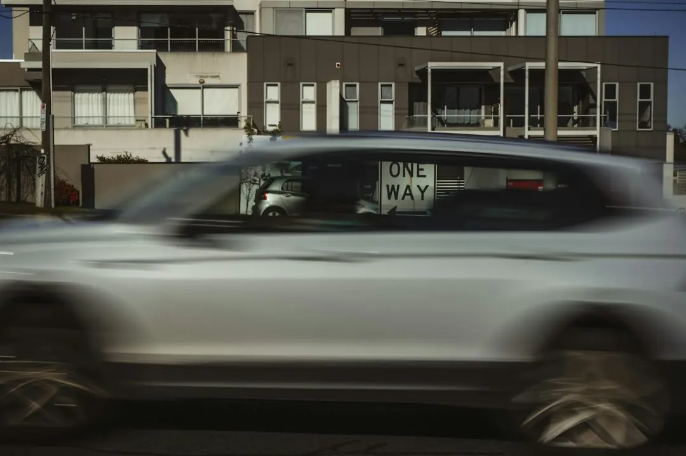

A home charger is generally installed on its own circuit in a garage, carport or driveway. The four main quote variables are cable run length, mounting location, charger type and switchboard condition. Three phase units can deliver 11 to 22kW, although a vehicle's onboard charger may not use the full capacity. In Victoria, the electrician or Registered Electrical Contractor must issue a Certificate of Electrical Safety and provide a copy.
For homeowners considering ev charger installation melbourne options, the useful decisions concern the parking position, electrical supply, charger compatibility and required paperwork.
Ev Charger Installation Melbourne Explained
Ev Charger Installation Melbourne explains that a typical home arrangement places a wall charger on its own circuit in a garage, carport or driveway. The first useful decision is where the vehicle will normally sit, followed by the likely cable route back to the switchboard.
That route differs between older weatherboard or brick homes and newer estates on Melbourne's city fringe. An older switchboard may need work before the charger can be installed, while a newer property may already have a suitable arrangement. Include the property type, parking position, approximate cable distance and any known supply details in the first enquiry.
Solar panels or a battery should also be disclosed. They affect the questions to ask about a solar aware charger, existing inverter equipment and whether surplus daytime generation or cheaper tariff windows can be considered.
Choose output around the car and supply
The charger should be considered alongside the vehicle's onboard charging limit and the property's electrical supply. A universal Type 2 unit, Tesla Wall Connector and solar aware charger represent different choices, so the model of the car and the way it is parked are relevant before equipment is selected.
Three phase chargers can deliver 11 to 22kW, but the car may not accept all of that output. Paying attention to the vehicle's onboard charger avoids treating the highest available rating as an automatic requirement. Ask the electrician to explain the expected result for the specific car and supply.
A household that parks overnight may approach the decision differently from one that needs faster turnaround between trips. If equipment has already been purchased, provide its model name and ask whether the proposed circuit, mounting position and protection are suitable.
Turn quote differences into comparable decisions
Two quotes for the same charger can differ because they allow for different cable lengths, mounting positions, switchboard conditions or charger types. A useful comparison keeps those assumptions visible instead of judging the final amount alone.
- State the charger model, parking location and preferred mounting position.
- Describe the distance and likely route between the charger and switchboard.
- Ask whether switchboard upgrades, load management or added protection are included.
- Confirm whether the proposed work suits the car's onboard charger and the property supply.
- Ask what completion documents will be provided after the installation.
In Victoria, the electrician or Registered Electrical Contractor who completes the work must issue a Certificate of Electrical Safety and provide a copy. The published guidance also notes that some prescribed electrical work requires an independent Licensed Electrical Inspector, so ask whether that step applies and who will arrange it.
Shared parking changes the approval path
A unit, townhouse or apartment car park can require more planning than a private garage or driveway. Owners corporation approval, metering and load sharing may all need to be addressed before equipment is ordered. The charger may be close to the vehicle while the electrical route still runs to a shared or separately controlled supply.
Ask who controls the parking bay, who can authorise work near the switchboard, how electricity use will be measured and whether the proposed capacity is private or shared. Renters and owners should establish these points early, because a suitable wall location does not by itself confirm that the electrical arrangement is approved.
Melbourne locations such as Brighton, Camberwell, Point Cook, Craigieburn and Berwick can contain different housing and parking arrangements. The useful local detail is the property type and access route, not the suburb name on its own.
Prepare one complete enquiry
A concise enquiry can contain the information needed for a meaningful response: vehicle make and model if known, charger model if already bought, property type, parking location, approximate cable route, apparent supply type, switchboard information and any solar or battery equipment.
For a second view of the planning process, the Melbourne home charging installation guide sets out related questions about charger selection and electrical preparation. Use the two guides to structure the conversation, then ask the electrician to state assumptions in writing.
The finished scope should identify the charger position, proposed circuit, switchboard work, protection, approval responsibilities and Certificate of Electrical Safety arrangements. That record makes it easier to see which parts are included and which decisions remain open.
- Map the parking spot. Record whether the car uses a garage, carport or driveway and estimate the distance to the switchboard.
- Check the supply. Note whether the supply appears single or three phase, the apparent switchboard age and whether solar or a battery is connected.
- Identify the charger. Provide the vehicle details and identify a Type 2 unit, Tesla Wall Connector, solar aware charger or a request for advice.
- Request a written scope. Ask what circuit, protection, switchboard work, approvals and certification are included.
| Option | Useful when | Question to ask |
|---|---|---|
| Single phase home charger | The property and vehicle do not require three phase output | Is the existing supply suitable for a dedicated circuit? |
| Three phase charger | The supply and vehicle may use higher charging capacity | Will the car's onboard charger accept the proposed 11 to 22kW output? |
| Solar aware charger | The home has rooftop solar and wants to consider surplus daytime generation | How will it work with the existing inverter, battery and tariff settings? |
| Shared property installation | The charger is being considered for an apartment, unit or townhouse car park | What owners corporation, metering and load sharing steps apply? |
Common questions
What usually changes the cost of a home charger installation? Cable run length, mounting location, charger type and switchboard condition are the main factors identified in the published guidance. Compare each quote against those items rather than comparing the total alone.
Does a three phase charger always charge a car at 22kW? No. Three phase chargers can deliver 11 to 22kW, but the vehicle's onboard charger may not use the full capacity. Ask for the proposed output to be matched to the car and property supply.
What paperwork should a Victorian homeowner receive? The electrician or Registered Electrical Contractor should issue a Certificate of Electrical Safety and provide a copy. Ask whether an independent Licensed Electrical Inspector is also involved.
Can an apartment owner install a charger in a shared car park? The project may require owners corporation approval, metering arrangements and load sharing. Confirm control of the bay, electrical supply and approval process before buying equipment.
What should a quote enquiry include? Include the suburb, property type, parking position, approximate distance to the switchboard, charger model if known, vehicle details and whether solar or a battery is installed.
This guide covers home charger planning, charger selection, quote comparisons, supply checks, solar considerations and shared property approvals in Melbourne.